Il rombo
Se un parallelogramma ha gli angoli congruenti, è un rettangolo (che è, quindi, un poligono equiangolo). Se un parallelogramma ha i lati congruenti, è un rombo (che è quindi un poligono equilatero). Infine definiamo il quadrato come rettangolo con i lati congruenti oppure come rombo con gli angoli congruenti (è un poligono equiangolo ed equilatero, quindi è regolare).
Definizione 3.7.1. Un rombo è un parallelogramma avente i quattro lati congruenti. □
Per affermare che un parallelogramma è un rombo è sufficiente dimostrare che ha due lati consecutivi congruenti. Infatti, un parallelogramma ha i lati opposti congruenti e, se due lati consecutivi sono congruenti, per la proprietà transitiva tutti i suoi lati sono congruenti.
Essendo il rombo un parallelogramma, per esso sono valide tutte le proprietà di quest’ultimo.
Con queste proprietà possiamo giustificare il procedimento (figura 15 nel paragrafo 4 del capitolo G1) per la determinazione del punto medio di un segmento.
Esso si basa sulla costruzione di un rombo che ha una delle diagonali coincidente con il segmento, mentre l’altra interseca il segmento nel punto medio: infatti nel rombo, come in tutti i parallelogrammi, le diagonali si tagliano scambievolmente a metà.
Le proprietà delle diagonali del rombo
Teorema 3.7.2. Un rombo ha le diagonali che sono perpendicolari fra loro e bisettrici degli angoli. □
Ipotesi ABCD è un rombo.
Tesi 1. AC ⊥ BD; 2. AC e BD sono bisettrici degli angoli.
Dim.
Il rombo è un parallelogramma, quindi le diagonali si bisecano: BM ≅ MD e AM ≅ MC (figura 1a). Poiché ABCD è un rombo, ha i lati congruenti, quindi il triangolo ACD è isoscele.
Il segmento DM è mediana, di conseguenz altezza e anche bisettrice dell’angolo al vertice, pertanto DM ⊥ AC; possiamo concludere che anche BD ⊥ AC e inoltre AD̂B ≅ BD̂C.
Ripetendo lo stesso ragionamento sul triangolo ADB (figura 19c), troviamo che AM è bisettrice dell’angolo Â, quindi BÂC ≅ CÂD. □
Condizioni sufficienti perché un parallelogramma sia un rombo
Teorema 3.7.2 (Condizione sufficiente 1) Se un parallelogramma ha le diagonali perpendicolari, allora è un rombo.
Ipotesi. 1 ABCD è un parallelogramma; 2. AC ⊥ BD.
Tesi ABCD è un rombo.
Dim. Per dimostrare che il parallelogramma ABCD è un rombo, dobbiamo dimostrare che ha tutti i lati congruenti (figura a lato).
ABCD è un parallelogramma, quindi le diagonali si tagliano a metà, pertanto AM ≅ MC e BM ≅ MD.
I triangoli AM̂D e DM̂C hanno:
AM ≅ MC per la deduzione precedente;
DM in comune;
AM̂D ≅ DM̂C in quanto retti per l’ipotesi 2.
Quindi sono congruenti per il primo criterio di congruenza dei triangoli rettangoli.
In particolare, risultano congruenti le ipotenuse AD e DC.
Il parallelogramma ABCD, avendo due lati consecutivi congruenti, ha tutti i lati congruenti, pertanto è un rombo.
Teorema 3.7.3 (Condizione sufficiente 2) Se un parallelogramma ha una diagonale bisettrice di un angolo, allora è un rombo.
Ipotesi. 1. ABCD è un parallelogramma; 2. AC è bisettrice di Â; Tesi ABCD è un rombo.
Dim.
DÂC ≅ CÂB perché AC bisettrice di  per l’ipotesi 2;
DÂC ≅ AĈB poiché angoli alterni interni delle rette parallele DA e CB tagliate dalla trasversale AC;
CÂB ≅ AĈB per la proprietà transitiva.
Dunque il triangolo ACB è isoscele sulla base AC e pertanto AB ≅ BC.
Il parallelogramma ABCD, avendo due lati consecutivi congruenti, è un rombo.
Area rombo
Il rombo è un particolare parallelogramma. Quindi, la sua area si può calcolare con la formula che conosciamo:
A = b ⋅ h

Esiste tuttavia un’altra formula che si applica quando è nota la misura di ciascuna diagonale del rombo.
Consideriamo allora un rombo R0 con le diagonali che misurano d1 e d2.
Tracciamo dai vertici A e C le parallele alla diagonale maggiore e dai vertici D e B le parallele alla diagonale minore: otteniamo un rettangolo R, con le dimensioni congruenti alle diagonali del rombo.
Osserviamo che il rombo è formato da quattro triangoli congruenti, mentre il rettangolo è formato da otto di questi triangoli.
Deduciamo allora che:
un rombo è equivalente alla metà di un rettangolo con la base e l’altezza lunghe come le diagonali del rombo.
Quindi, passando all’area, diciamo in generale che: L’area di un rombo si ottiene moltiplicando le misure delle diagonali e dividendo il prodotto per due.
Il rombo è un particolare parallelogramma. Quindi, la sua area si può calcolare con la formula che conosciamo:
A = b ⋅ h
Esiste tuttavia un’altra formula che si applica quando è nota la misura di ciascuna diagonale del rombo.
Consideriamo allora un rombo R0 con le diagonali che misurano d1 e d2.
Tracciamo dai vertici A e C le parallele alla diagonale maggiore e dai vertici D e B le parallele alla diagonale minore: otteniamo un rettangolo R, con le dimensioni congruenti alle diagonali del rombo.
Osserviamo che il rombo è formato da quattro triangoli congruenti, mentre il rettangolo è formato da otto di questi triangoli.
Deduciamo allora che:
un rombo è equivalente alla metà di un rettangolo con la base e l’altezza lunghe come le diagonali del rombo.
Quindi, passando all’area, diciamo in generale che: L’area di un rombo si ottiene moltiplicando le misure delle diagonali e dividendo il prodotto per due.